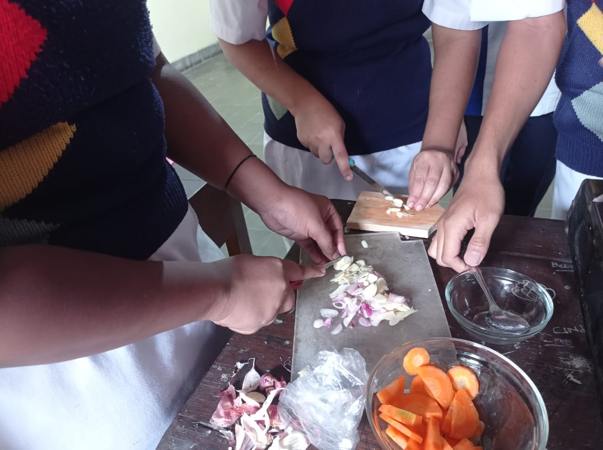
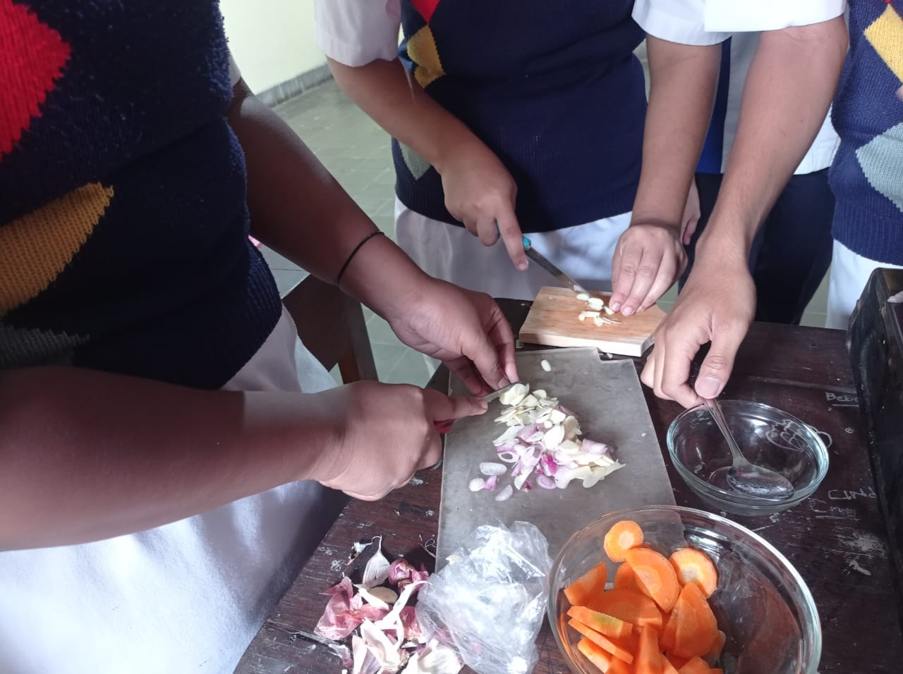
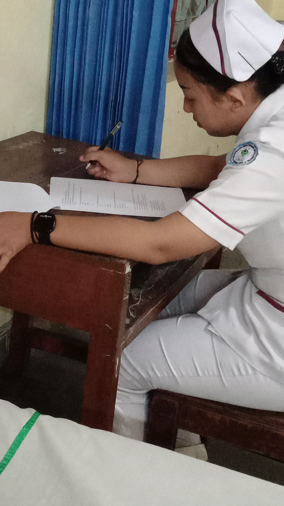
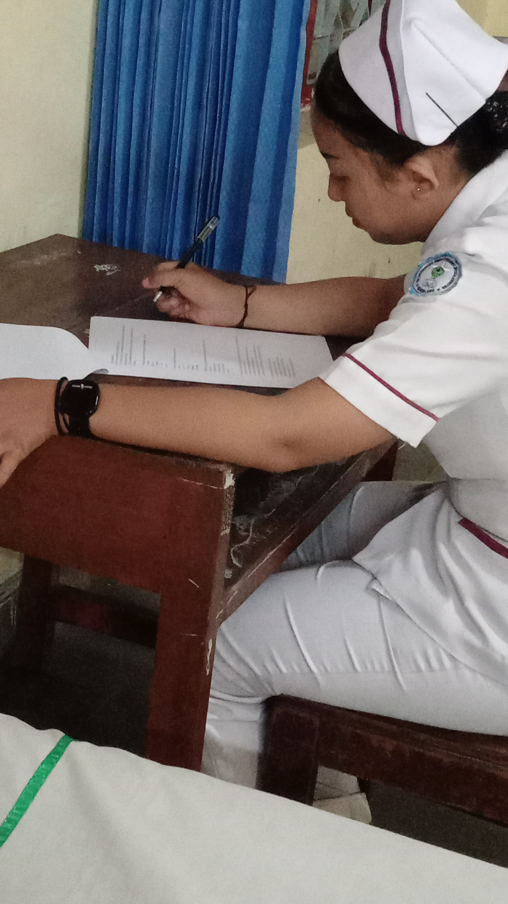

.png)


Kegiatan Latihan Dasar Kepemimpinan Siswa (LDKS) dan Perkemahan Jumat-Sabtu (Perjumsa) di tingkat SMK bertujuan untuk membentuk karakter, meningkatkan kedisiplinan, serta memperkuat jiwa kepemimpinan dan kebersamaan siswa. LDKS biasanya diisi dengan berbagai pelatihan seperti manajemen organisasi, komunikasi efektif, pengambilan keputusan, dan simulasi kepemimpinan, yang dirancang untuk mempersiapkan siswa menjadi pemimpin yang tangguh dan bertanggung jawab. Sementara itu, Perjumsa menggabungkan kegiatan pendidikan luar ruangan, seperti perkemahan, permainan tim, dan kegiatan kepramukaan, untuk melatih kemandirian, kerja sama, dan rasa peduli terhadap lingkungan. Melalui kombinasi kegiatan ini, siswa tidak hanya memperoleh pengalaman yang bermanfaat untuk pengembangan diri, tetapi juga menumbuhkan semangat persatuan dan kemampuan berkontribusi positif dalam lingkungan sekolah maupun masyarakat.
 

Kegiatan Praktikum membuat diet pada pasien Gastritis Gastritis, atau peradangan pada lapisan lambung, memerlukan perhatian khusus dalam pola makan untuk mencegah iritasi dan mempercepat proses penyembuhan. Kegiatan mengolah makanan bagi pasien gastritis bertujuan untuk menciptakan hidangan yang mudah dicerna, rendah asam, serta minim lemak dan bumbu yang tajam. Pemilihan bahan makanan menjadi hal yang sangat penting, seperti penggunaan sayuran yang tidak berserat kasar, daging tanpa lemak, serta karbohidrat kompleks seperti nasi atau kentang. Proses memasak juga harus diperhatikan, di mana metode seperti merebus, mengukus, atau memanggang lebih disarankan dibandingkan menggoreng atau memanggang dengan suhu tinggi. Hindari penggunaan bahan-bahan yang merangsang produksi asam lambung, seperti cabai, cuka, tomat, dan makanan yang digoreng. Selain itu, makanan yang diolah untuk pasien gastritis sebaiknya memiliki tekstur yang lembut dan suhu yang hangat, karena makanan yang terlalu panas atau terlalu dingin dapat memperparah gejala. Penyajian makanan dalam porsi kecil namun sering juga dianjurkan, untuk mencegah lambung bekerja terlalu keras. Kegiatan ini juga melibatkan perhatian terhadap pengaturan jadwal makan yang teratur agar produksi asam lambung tetap stabil. Dengan pendekatan yang cermat dalam mengolah dan menyajikan makanan, pasien gastritis dapat menikmati makanan yang aman, bernutrisi, dan mendukung proses pemulihan tanpa memicu ketidaknyamanan.
 

Kegiatan praktikum lapangan uji kelayakan kompetensi keperawatan tingkat SMK merupakan salah satu program penting dalam mempersiapkan siswa menghadapi dunia kerja di bidang kesehatan. Kegiatan ini bertujuan untuk menguji keterampilan, pengetahuan, dan sikap profesional siswa dalam situasi praktik nyata. Siswa akan menjalani simulasi atau praktik langsung di fasilitas kesehatan seperti rumah sakit, puskesmas, atau klinik, dengan pengawasan dari guru pembimbing atau tenaga medis profesional. Dalam uji kompetensi ini, siswa akan mempraktikkan berbagai prosedur keperawatan, seperti pengukuran tanda vital, pemberian perawatan dasar, hingga komunikasi terapeutik dengan pasien, sesuai standar operasional yang berlaku. Melalui kegiatan ini, siswa tidak hanya diuji kemampuannya dalam menerapkan teori yang telah dipelajari di kelas, tetapi juga dilatih untuk bekerja secara etis, cekatan, dan tanggap terhadap kebutuhan pasien. Evaluasi dilakukan untuk mengukur sejauh mana siswa telah memenuhi kriteria kompetensi yang ditetapkan, baik dari segi teknis maupun soft skills seperti empati dan kerja sama tim. Dengan demikian, kegiatan ini menjadi langkah strategis dalam memastikan lulusan SMK keperawatan siap bersaing di dunia kerja sekaligus memberikan pelayanan kesehatan yang berkualitas.